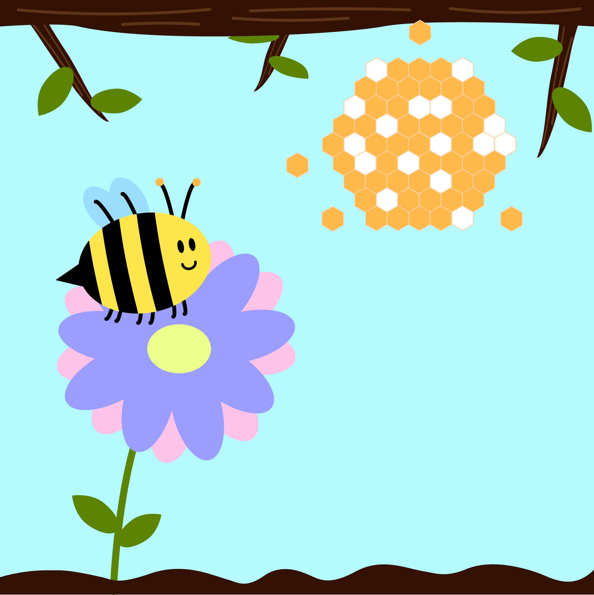

Hello! I'm Jennifer, your dedicated guide on this creative design journey. As a Senior Associate UX Designer, I've had the privilege of bringing together my passions for art, design, and problem-solving. A few years ago, I discovered my love for UX Design, embarking on a journey of self-teaching in the field. What I love most about designing experiences for users is the challenge of truly understanding their needs and creating solutions that best fit them. It's incredibly rewarding to know that my work makes a positive impact on the lives of users. But beyond my professional journey, I'm deeply passionate about empowering aspiring designers from non-design backgrounds. I believe that creativity knows no bounds, and I'm dedicated to breaking down barriers to entry in the design world. Im passionate about teaching others what I’ve learned and telling my story to inspire and motivate others.  Outside of work, you'll often find me illustrating. Drawing has been a lifelong hobby, and I've honed my skills through various challenges, including a 30-day illustrator challenge in 2022, and ongoing digital illustrating through my graphic design certificate program. It's not just a way to destress but also a means of personal growth and a reminder that creativity knows no boundaries. Overall, I'm excited to continue learning and growing in my career as a UX designer, all while advocating for the value of user-centered design and helping others, regardless of their background, find their path in the world of design.